콘크리트기사 (2020-06-06 기출문제)
1과목: 재료 및 배합
1. 굵은 골재의 체가름을 하여 다음 표와 같은 결과를 얻었다. 이 골재의 조립률은 얼마인가?
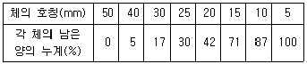
- 3.52
- 7.34
- 8.34
- 8.52
(정답률: 78%)

2. 포졸란 반응의 특징이 아닌 것은?
- 작업성이 좋아진다.
- 블리딩이 감소한다.
- 초기 강도와 장기 강도가 증가한다.
- 발열량이 적어 단면이 큰 콘크리트에 적합하다.
(정답률: 83%)
3. 플라이 애시의 품질 시험에 사용하는 시험 모르타르의 배합 비율로서 옳은 것은? (단, 보통 포틀랜드 시멘트 : 플라이 애시의 질량 비율)
- 3:1
- 2:1
- 1:2
- 1:3
(정답률: 89%)
4. 콘크리트용 강섬유의 인장강도 시험방법(KS F 2565)에 대한 설명으로 틀린 것은?
- 시료의 수는 10개 이상으로 한다.
- 평균 재하 속도는 (5~10)MPa/s의 속도로 한다.
- 강섬유의 인장강도(ft)구하는 식은
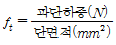
이다. - 시료의 장착은 눈금 거리를 10mm로 하고, 시험 중 빠지지 않도록 고정하여야 한다.
(정답률: 69%)
5. 시방배합으로 산출된 단위수량이 165kg/m3인 콘크리트에서 잔골재의 표면 수량 4%, 굵은 골재의 표면수량 2%인 현장 골재를 사용하기 위해 현장배합으로 수정하였다. 현장배합으로 단위 골재량이 650kg/m3, 단위 굵은 골재량 1326kg/m3을 얻었다면 현장배합의 단위 수량은?(오류 신고가 접수된 문제입니다. 반드시 정답과 해설을 확인하시기 바랍니다.)
- 112.5kg/m3
- 114.0kg/m3
- 120.0kg/m3
- 123.5kg/m3
(정답률: 48%)
6. 방청제에 관한 설명으로 옳지 않은 것은?
- 일밙거으로 아질산소다(NaNO3)를 주성분으로 한다.
- 방청제의 품질은 KS F 2561에 규정되어 있다.
- 경미한 균열이 있는 경우에는 사용하기 어렵다.
- 철근콘크리트나 프리스트레스트 콘크리트 속의 강재의 방청을 목적으로 하는 혼화제이다.
(정답률: 72%)
7. 아래 표는 상수돗물 이외의 물을 혼합수로 사용할 경우에 대한 물의 품질을 나타낸 것이다. 틀린 항목을 모두 나열한 것은?
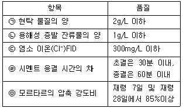
- ㉠, ㉡
- ㉠, ㉢
- ㉡, ㉤
- ㉢, ㉤
(정답률: 73%)
8. 콘크리트 배합설계에서 잔골재의 절대용적이 360L, 굵은 골재의 절대용적이 540L인 경우 잔골재율은?
- 30%
- 36%
- 40%
- 67%
(정답률: 66%)
9. 콘크리트용 화학 혼화제 중 공기연행감수제의 품질규정 항목과 관련이 없는 것은?
- 밀도
- 압축강도비
- 블리딩양의 비
- 응결시간의 차
(정답률: 42%)
10. 콘크리트용 플라이 애시로 사용할 수 없는 것은?
- 수분이 0.5%인 경우
- 강열감량이 6%인 경우
- 밀도가 2.2g/cm3인 경우
- 이산화규소의 함유량이 48%인 경우
(정답률: 74%)
11. 콘크리트 배합설계에서 잔골재율을 작게 할 경우에 대한 설명으로 옳지 않은 것은?
- 콘크리트가 거칠어진다.
- 단뒤시멘트량이 감소하여 경제적이다.
- 재료분리가 일어나는 경향이 감소된다.
- 소요 워커빌리티를 얻기 위한 단위수량이 감소된다.
(정답률: 45%)
12. 콘크리트의 압축강도를 알지 못할 때, 또는 압축강도의 시험횟수가 14회 이하인 경우 콘크리트의 배합강도를 구한 것으로 틀린 것은?
- 설계기준강도가 20MPa일 때, 배합강도는 27MPa이다.
- 설계기준강도가 25MPa일 때, 배합강도는 33.5MPa이다.
- 설계기준강도가 40MPa일 때, 배합강도는 47MPa이다.
- 설계기준강도가 50MPa일 때, 배합강도는 60MPa이다.
(정답률: 66%)
13. 시멘트의 응결에 대한 설명으로 옳지 않은 것은?
- C3A함유량이 많을수록 응결이 빨라진다.
- 위응결은 재비빔한 후 정상적으로 응결된다.
- 석고의 첨가량이 많을수록 응결이 빨라진다.
- 시멘트의 분말도가 클수록 응결이 빨라진다.
(정답률: 73%)
14. 콘크리트 압축강도의 시험횟수가 22회일 경우 배합강도를 결정하기 위해 적용하는 표준편차의 보정계수로 옳은 것은?
- 1.04
- 1.06
- 1.08
- 1.10
(정답률: 67%)
15. 수경성 시멘트 모르타르 압축강도 시험용 시험체의 성형과 관련한 설명으로 틀린 것은?
- 두께 약 25mm 모르타르 층을 모든 입방체 칸 안에 넣는다.
- 플로 시험이 끝나는 즉시 모르타르를 플로틀로부터 혼합 용기에 쏟는다.
- 각 입방체 칸 안의 모르타르에 대하여 약 10초 동안에 네 바퀴로 32회 찧는다.
- 모르타르 배치의 처음 반죽이 끝난 뒤로 부터 5분 이내에 시험체의 성형을 시작한다.
(정답률: 38%)
16. 잔골재의 유기 불순물 시험에 대한 설명으로 틀린 것은?
- 시험 재료로서 수산화나트륨과 탄닌산이 필요하다.
- 모래에 존재하는 부식된 형태의 유기 불순물의 존재 여부를 분별하기 위한 것이다.
- 잔골재 중의 유기 불순물은 콘크리트의 경화를 방해하고 강도, 내구성 등에 나쁜 영향을 미친다.
- 모래 상층부의 시험 용액의 색이 표준색 용액의 색보다 짙은 경우 그 모래는 합격이 된다.
(정답률: 78%)
17. KS 규격에 따른 각종 시멘트 시험에 대한 설명으로 틀린 것은?
- 시멘트의 강도 시험용 모르타르의 배합은 시멘트 : 표준사 = 1 : 3, 물/시멘트비는 0.5이다.
- 감열 감량은 일반적으로 시멘트를 약 1450℃로 가열했을 때의 감소되는 질량을 측정하여 백분률로 나타낸다.
- 분말도는 시멘트의 입자 크기를 비표면적으로 나타내는 것으로써 블레인 공기 투과 장치에 의해 측정할 수 있다.
- 길모어 침에 의한 응결 시간은 사용한 물의 양이나 온도 또는 반죽의 반죽 정도 뿐만 아니라 공기의 온도 및 습도에도 영향을 받으므로 측정한 시멘트의 응결시간은 근사값이다.
(정답률: 64%)
18. 일반 콘크리트용으로 사용이 부적합한 잔골재는?
- 안정성이 8%인 잔골재
- 흡수율이 2.2%인 잔골재
- 절대건조밀도가 2.6g/cm3인 잔골재
- 0.08mm체 통과량이 8.0%인 잔골재
(정답률: 48%)
19. 콘크리트용 순환골재의 물리적 성질에 관한 설명으로 틀린 것은?
- 순환 굵은 골재의 마모율은 40% 이하이다.
- 순환 굵은 골재의 입자모양 판정 실적률은 45% 이상이다.
- 잔골재 및 굵은 골재의 흡수율은 각각 4.0%이하, 3.0% 이하이다.
- 잔골재 및 굵은 골재의 절대건조밀도는 각각 2.3g/cm3이상, 2.5g/cm3이상이다.
(정답률: 29%)
20. 콘크리트 압축강도시험에서 20개의 공시체를 측정하여 평균값이 25.0MPa, 표준편차가 2.5MPa일 때의 변동계수는?
- 8%
- 9%
- 10%
- 11%
(정답률: 79%)
2과목: 제조, 시험 및 품질관리
21. 콘크리트의 제조 공정에 있어서 배합 검사항목 중 시기 및 횟수가 옳은 것은?
- 잔골재 조립률 : 2회/일 이상
- 잔골재 표면수율 : 1회/일 이상
- 굵은 골재 조립률 : 1회/일 이상
- 굵은 골재 표면수율 : 2회/일 이상
(정답률: 39%)
22. 콘크리트의 압축강도 시험을 실시한 결과가 아래의 표와 같을 때, 불편분산에 의한 표준편차는?
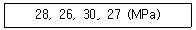
- 1.71MPa
- 1.90MPa
- 2.14MPa
- 2.32MPa
(정답률: 43%)
23. 콘크리트의 크리프에 대한 설명으로 틀린 것은?
- 부재치수가 작을수록 크리프가 크다.
- 배합 시 시멘트량이 많을수록 크리프가 크다.
- 재하기간 중의 대기의 습도가 낮을수록 크리프가 크다.
- 조강 시멘트를 사용한 콘크리트는 보통 시멘트를 사용한 경우보다 크리프가 크다.
(정답률: 49%)
24. 굳지 않은 콘크리트의 슬럼프 시험(KS F 2402)에 관한 설명으로 틀린 것은?
- 전 작업시간을 3분 이내로 끝낸다.
- 슬럼프 콘의 측정 높이에서 주저않은 높이를 1mm정밀도로 측정한다.
- 슬럼프 콘을 들어 올리는 시간은 높이 300mm에서 (2~3)초로 한다.
- 슬럼프 콘 규격은 윗면의 안지름 100mm, 밑면의 안지름 200mm, 높이는 300mm이다.
(정답률: 72%)
25. 콘크리트의 블리딩 시험방법(KS F 2414)에 대한 설명으로 틀린 것은?
- 시험 중에는 실온(25±2)℃로 한다.
- 블리딩 용기의 치수는 안지름 250mm, 안높이 285mm로 한다.
- 이 방법은 굵은 골재의 최대 치수가 40mm이하인 콘크리트의 블리딩 시험방법에 대해 규정한다.
- 최초로 기록한 시각에서부터 60분 동안 10분마다 콘크리트 표면에서 스며나온 물을 빨아내고, 그 후는 블리딩이 정지할 때까지 30분마다 물을 빨아낸다.
(정답률: 69%)
26. 콘크리트의 압축강도에 대한 설명으로 틀린 것은?
- 150mm 입방체 공시체는 ø150×300mm원주형 공시체의 강도보다 크다.
- 양생온도가 4~40℃범위에 있을 때 온도가 노아짐에 따라 재령 28일 강도는 증가한다.
- 원주형 공시체의 직경(D)과 높이(H)와의 비(H/D)의 값이 클수록 압축강도는 증가한다.
- 콘크리트의 압축강도가 클수록 취도계수(압축강도와 인장강도의 비)는 증가한다.
(정답률: 69%)
27. 일반콘크리트에서 압축강도에 의한 콘크리트의 품질검사에 관한 설명으로 틀린 것은?
- 1회 시험값이(설계기준압축강도 –3.5MPa)이상이어야 한다.
- 1회/일, 또는 120m3마다 1회, 배합이 변경될때마다 압축강도시험을 실시한다.
- 3회 연속한 압축강도 시험값의 평균이 설계기준압축강도 이상이어야 한다.
- 압축강도에 의한 콘크리트 품질관리는 일반적인 경우 장기재령에 있어서의 압축강도에 의해 실시한다.
(정답률: 37%)
28. 거푸집에 작용하는 콘크리트 측압에 대한 설명으로 틀린 것은?
- 타설 속도가 빠를수록 측압은 증가한다.
- 단위 중량이 증가할수록 측압은 증가한다.
- 타설되는 콘크리트의 온도가 증가할수록 측압은 감소한다.
- 지연제를 사용하면 사용하지 않은 경우보다 측압은 감소한다.
(정답률: 42%)
29. 블리딩이 일어나는데 가장 영향이 큰 조건은?
- 단위수량이 큰 경우
- 슬럼프가 작은 경우
- 잔골재가 많은 경우
- 배합강도가 낮은 경우
(정답률: 59%)
30. 급속 동결 융해에 대한 콘크리트의 저항시험(KS F 2456)에서 규정하고 있는 시험 방법의 종류로 옳은 것은?
- 수중 급속 동결 융해 시험방법, 기중 급속 동결 융해 시험방법
- 수중 급속 동결 융해 시험방법, 기중 급속 동결 후 수중 융해 시험방법
- 기준 급속 동결 융해 시험방법, 수중 급속 동결 후 기중 융해 시험방법
- 기중 급속 동결 융해 시험방법, 기중 급속 동결 후 수중 융해 시험방법
(정답률: 47%)
31. 지름 150mm, 길이 300mm인 콘크리트 공시체의 인장강도 시험 결과 최대 파괴 하중이 1920N일 때, 인장강도는?
- 0.021MPa
- 0.024MPa
- 0.027MPa
- 0.030MPa
(정답률: 56%)
32. 경화된 콘크리트의 염화물 함유량 측정방법(KS F 2717)으로 적합하지 않은 것은?
- 흑광광도법
- 질산은 적정법
- 페놀프탈레인 용액법
- 이온크로마토그래피법
(정답률: 70%)
33. 콘크리트의 전단탕성계수(G)를 구하는 공식으로 옳은 것은? (단, E는 탄성계수, m은 프와송수 이다.)
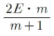
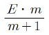
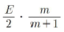
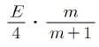
(정답률: 56%)
34. 현장에 납품된 콘크리트의 받아들이기 품질검사를 하려고 할 때, 받아들이기 품질 검사의 항목이 아닌 것은?
- 공기량
- 슬럼프
- 압축강도
- 염소이온량
(정답률: 51%)
35. AE콘크리트 중에 포함된 유효공기량의 범위로 가장 적당한 것은?
- 1~2%
- 3~6%
- 7~10%
- 10~12%
(정답률: 62%)
36. 압력법에 의한 굳지 않은 콘크리트의 공기량 시험 방법(KS F 2421)에 대한 설명으로 틀린 것은?
- 시험의 원리는 보일의 법칙을 기초로 한 것이다.
- 이 시험 방법은 굵은 골재 최대 치수 40mm이하의 보통 골재를 사용한 콘크리트에 대해서 적당하다.
- 공기량 측정기의 용적은 물을 붓고 시험하는 경우 적어도 7L로 하고, 물을 붓지 않고 시험하는 경우는 5L 정도 이상으로 한다.
- 용기 교정 시 용기 높이의 약 90%까지 물을 채운 후 연마 유리판을 상부에 얹고 남은 물을 더함과 동시에 연마 유리판을 플랜지에 따라 이동시키면서 물을 채운다.
(정답률: 55%)
37. 다음 보기를 보고 품질관리의 순서로 가장 적합한 것은?
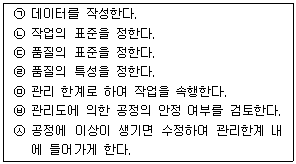
- ㉣-㉢-㉡-㉠-㉥-㉤-㉦
- ㉢-㉦-㉡-㉠-㉥-㉤-㉣
- ㉡-㉢-㉣-㉦-㉥-㉤-㉠
- ㉢-㉠-㉣-㉤-㉥-㉡-㉦
(정답률: 58%)
38. 레디믹스트 콘크리트의 종류에 따른 굵은 골재 최대 치수를 나열한 것으로 틀린 것은?
- 고강도 콘크리트 : 20mm, 25mm
- 경량골재 콘크리트 : 20mm, 25mm
- 보통콘크리트 : 20mm, 25mm, 40mm
- 포장콘크리트 : 20mm, 25mm, 40mm
(정답률: 39%)
39. 관입 저항침에 의한 콘크리트의 응결시간을 측정할 때, 초결시간(㉠) 및 종결시간(㉡)으로 결정하는 관입저항값으로 옳은 것은?
- ㉠ : 2.5MPa, ㉡ : 25.0MPa
- ㉠ : 2.5MPa, ㉡ : 28.0MPa
- ㉠ : 3.5MPa, ㉡ : 25.0MPa
- ㉠ : 3.5MPa, ㉡ : 28.0MPa
(정답률: 58%)
40. 콘크리트 재료의 1회 계량분에 대한 계량의 허용오차로 옳지 않은 것은?
- 물 : ±1% 이하
- 시멘트 : ±2% 이하
- 골재 : ±3% 이하
- 혼화제 : ±3% 이하
(정답률: 47%)
3과목: 콘크리트의 시공
41. 일반 큰크리트의 타설에 대한 설명으로 틀린 것은?
- 한 구획 내의 콘크리는 타설이 완료될 때까지 연속해서 타설하여야 한다.
- 슈트, 펌프 배관, 버킷, 호퍼 등의 배출구와 타설 면까지의 높이는 1.5m 이하를 원칙으로 한다.
- 콘크리트를 2층 이상으로 나누어 타설할 경우, 상층 콘크리트는 하층 콘크리트가 완전히 굳은 뒤에 타설하여야 한다.
- 벽 또는 기둥과 같이 높이가 높은 콘크리트를 연속해서 타설할 경우 콘크리트를 쳐 올라가는 속도는 일반적으로 30분에 1~1.5m 정도로 하는 것이 좋다.
(정답률: 62%)
42. 수중 콘크리트의 타설에 대한 설명으로 틀린 것은?
- 수중 불분리성 콘크리트의 펌프시공 시 압송압력은 보통 콘크리트의 2~3배, 타설 속도는 1/2~1/3 정도이다.
- 수중 불분리성 콘크리트의 타설은 유속이 50mm/s 정도 이하의 정수 중에서 수중 낙하 높이 0.5m 이하여야 한다.
- 일반 수중 콘크리트의 트레미에 의한 타설시 트레미의 안지름은 수심 5m 이상의 경우 300~500mm 정도가 좋다.
- 일반 수중 콘크리트의 타설에서 트레미 1개로 타설할 수 잇는 면적은 지나치게 크지 않도록 해야 하며, 50m2정도가 좋다.
(정답률: 37%)
43. 레디믹스트 콘크리트의 종류 중 재료를 계량만 한 후 트럭 애지테이터로 혼합하면서 운반하는 방식으로 먼 거리 이동에 적합한 것은?
- 센트럴 믹스트 콘크리트
- 쉬링크 믹스트 콘크리트
- 트랜싯 믹스트 콘크리트
- 플랜트 믹스트 콘크리트
(정답률: 46%)
44. 균열제어를 목적으로 설치하는 균열유발 이음의 간격으로 옳은 것은?
- 부재높이의 1~2배 이내, 단면결손율은 20%를 약간 넘게 한다.
- 부재높이의 1~2배 이내, 단면결손율은 30%를 약간 넘게 한다.
- 부재높이의 0.5~1.5배 이내, 단면결손율은 20%를 약간 넘게 한다.
- 부재높이의 0.5~1.5배 이내, 단면결손율은 30%를 약간 넘게 한다.
(정답률: 36%)
45. 팽창 콘크리트의 품질 중 팽창률에 대한 내용으로 옳지 않은 것은?
- 콘크리트의 팽창률은 일반적으로 재령 28일에 대한 시험값을 기준으로 한다.
- 수축보상용 콘크리트의 팽창률은 150×10-6이상, 250×10-6이하인 값을 표준으로 한다.
- 화학적 프리스트레스용 콘크리트의 팽창률은 200×10-6이상, 700×10-6이하를 표준으로 한다.
- 공장 제품에 사용하는 화학적 프리스트레스용 콘크리트의 팽창률은 200×10-6이상, 1000×10-6이하를 표준으로 한다.
(정답률: 49%)
46. 매스 콘크리트로 다루어야 하는 구조물 부재치수의 일반적인 표준값으로 옳은 것은?
- 넓이가 넓은 평판구조 및 하단이 구속된 벽체에서 두께 0.5m 이상
- 넓이가 넓은 평판구조 및 하단이 구속된 벽체에서 두께 0.8m이상
- 넓이가 넓은 평판구조의 경우 두께 0.5m이상, 하단이 구속된 벽체의 경우 두께 0.8m 이상
- 넓이가 넓은 평판구조의 경우 두께 0.8m이상, 하단이 구속된 벽체의 경우 두께 0.5m이상
(정답률: 57%)
47. 서중 콘크리트에 대한 설명으로 틀린 것은?
- 서중 콘크리트는 배합온도를 낮게 관리하여야 한다.
- 하루 평균기온이 25℃를 초과하는 것이 예상되는 경우 서중 콘크리트로 시공하여야 한다.
- 기온 10℃의 상승에 소요 단위수량은 2~5% 감소하므로 시멘트량도 비례하여 감소시켜야 한다.
- 콘크리트는 비빈 후 즉시 타설하여야 하며, 지연형 감수제를 사용하는 등의 일반적인 대책을 강구한 경우라도 1.5시간 이내에 타설하여야 한다.
(정답률: 52%)
48. 댐 콘크리트에 대한 설명으로 옳은 것은?
- 댐 콘크리트용 시멘트는 고발열형, 단기 강도 증진형이 바람직하다.
- 댐 콘크리트는 일반적으로 단위 시멘트량이 높은 부배합으로 한다.
- 롤러다짐 콘크리트의 반죽질기는 VC시험으로 20±10초를 표준으로 한다.
- 댐 콘크리트에는 중용열 포틀랜드 시멘트와 플라이 애시 시멘트는 사용하지 않는 것이 원칙이다.
(정답률: 41%)
49. 거푸집 및 동바리 구조계산에 관한 아래 내용 중 ㉠, ㉡에 들어갈 알맞은 것은?
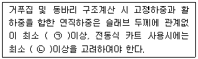
- ㉠ : 3.75kN/m2, ㉡ : 5.00kN/m2
- ㉠ : 3.75kN/m2, ㉡ : 6.25kN/m2
- ㉠ : 5.00kN/m2, ㉡ : 6.25kN/m2
- ㉠ : 5.00kN/m2, ㉡ : 5.00kN/m2
(정답률: 37%)
50. 책임기술자가 설계도면과 시방서에 따라 콘크리트의 품질 확보를 위하여 기록 및 보관하여야 하는 항목이 아닌 것은?
- 철근의 종류
- 콘크리트 비비기, 타설, 양생
- 콘크리트 재료의 품질, 배합 및 강도
- 거푸집과 동바리의 설치와 제거, 그리고 동바리의 재설치
(정답률: 40%)
51. 경량골재콘크리트에 관한 설명 중 옳지 않은 것은?
- 경량골재콘크리트의 기건 단위질량은 1400~2000kg/m3이다.
- 경량골재콘크리트의 설계기준압축강도는 15MPa이상, 24MPa이하로 한다.
- 경량골재콘크리트의 공기량은 일반 골재를 사용한 콘크리트보다 1%작게 한다.
- 경량골재의 잔골재는 절건밀도가 1800kg/m3미만, 굵은 골재는 절건밀도가 150kg/m3미만인 것을 말한다.
(정답률: 49%)
52. 프리플레이스트 콘크리트의 압송 및 주입에 관한 설명으로 옳지 않은 것은?
- 수송관을 통과하는 모르타르의 평균유속은 0.5~2.0m/s 정도가 되돍 한다.
- 연직주입관 및 수평주입관의 수평간격은 2m정도를 표준으로 한다.
- 수송관의 연장은 짧게 하여야 하며, 연장이 100m를 넘을 때는 중계용 애지테이터와 펌프를 사용한다.
- 시공 중 모르타르 주입을 주기적으로 중단시켜 시공이음이 발생하도록 유도하여 온도변화 및 건조수축 등에 의한 균열 발생을 제어하여야 한다.
(정답률: 52%)
53. 고강도 콘크리트의 타설 시 주의사항으로 틀린 것은?
- 고강도 콘크리트는 유동성이 좋아 타설시 거푸집 변형에 주의한다.
- 벽체와 슬래브를 일체로 타설하는 경우 재료분리 방지를 위해 연속해서 타설한다.
- 다짐시간 및 진동기의 삽입간격은 사전에 다짐 성상을 확인하여 계획하여야 한다.
- 콘크리트 타설 후 경화할 때까지 직사광선이나 바람에 의해 수분이 증발하지 않도록 하여야 한다.
(정답률: 46%)
54. 유동화 콘크리트 제조 시 유동화 시키는 방법이 아닌 것은?
- 공장첨가 현장유동화 방식
- 공장첨가 공장유동화 방식
- 현장첨가 현장유동화 방식
- 현장첨가 공장유동화 방식
(정답률: 53%)
55. 숏크리트 작업에 대한 설명으로 틀린 것은?
- 반발량이 최대가 되도록 하여 리바운드된 재료가 다시 혼입되도록 한다.
- 뿜어 붙인 콘크리트가 소정의 두께가 될 때까지 반복해서 뿜어 붙인다.
- 강재지보공을 설치한 곳에서는 숏크리트와 강재지보공이 일체가 되도록 한다.
- 노즐은 항상 뿜어붙일 면에 직각이 되도록 유지하고 적절한 뿜는 압력을 유지하여야 한다.
(정답률: 54%)
56. 굵은 골재의 밀도 및 흡수율 시험방법(KS F 2503)에서 대기 중 시료의 절대 건조 상태의 시료 질량이 A, 대기 중 시료의 표면 건조 포화 상태의 밀도가 B, 침지된 시료의 수중 질량이 C일 때, 다음 계산과정 중 틀린 것은?
- 흡수율 = {(B-A)/A}×100
- 겉보기 밀도={A/(A-C)}×ρω
- 표면 건조 포화상태의 밀도={B/(A-C)×ρω
- 절대 건조 상태의 시료밀도={A/(B-C)×ρω
(정답률: 47%)
57. 시공이음에 대한 설명으로 틀린 것은?
- 바닥틀의 시공이음은 슬래브 또는 보의 경간 중앙부 부근에 두어야 한다.
- 아치의 시공이음은 아치축에 직각방향이 되돍 설치하여야 한다.
- 시공이음은 부재의 압축력이 작용하는 방향과 직각이 되도록 하는 것이 원칙이다.
- 바닥틀과 일체로된 기둥, 벽의 시공이음 위치는 바닥틀과의 경계 부근을 피하여 설치하여야 한다.
(정답률: 47%)
58. 방사선 차폐용 콘크리트의 이음 및 이어치기에 관한 설명 중 옳지 않은 것은?
- 이어치기의 경우 미리 계획을 세워 책임 기술자의 승인을 얻을 필요가 있다.
- 이어치기 형상은 방사선의 영향을 고려하여 가급적 평면으로 하는 것이 바람직하다.
- 시공이음 및 이어치기는 차폐측면에서 결함이 되기 때문에 가능한 실시하지 않도록 한다.
- 이어치기 위치는 선원에서의 방사선이 인체 혹은 측정기구가 있는 장소 등으로 직진하지 않도록 계획한다.
(정답률: 45%)
59. 다음의 시방배합을 현장배합으로 환산하면 잔골재량은?
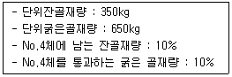
- 312.5kg
- 387.5kg
- 612.5kg
- 687.5kg
(정답률: 37%)
60. 숏크리트 코어 공시체(ø100×100mm)로 부터 채취한 강섬유의 질량이 61.2g이었다. 강섬유 혼입률을 구하면? (단, 강섬유의 단위질량은 7.85g/cm3)
- 0.5%
- 1%
- 3%
- 5%
(정답률: 52%)
4과목: 구조 및 유지관리
61. 콘크리트 구조물의 재하시험은 하중을 받는 구조부분의 재령이 최소한 며칠이 지난 다음에 재하시험을 시행하여야 하는가?
- 14일
- 28일
- 56일
- 84일
(정답률: 53%)
62. 경험과 기술을 갖춘 사람에 의한 세심한 외관조사 수준의 점검으로서 시설물의 기능적 상태를 판단하고 시설물이 현재의 사용요건을 계속 만족시키고있는지 확인하기 위한 점검은?
- 긴급점검
- 정기점검
- 정밀점검
- 정밀안전진단
(정답률: 56%)
63. 초음파속도법에 대한 설명으로 옳지 않은 것은?
- 측정법은 표면법, 대칭법, 사각법이 있다.
- 콘크리트의 균질성, 내구성 등의 판정에 이용된다.
- 음속만으로 콘크리트 압축강도를 정확하게 알 수 있다.
- 콘크리트의 종류, 측정대상물의 형상·크기 등에 대한 적용상의 제약이 비교적 적다.
(정답률: 57%)
64. 피복두께가 100mm이하이고, 건조 환경에 있는 철근콘크리트 구조물의 허용균열폭은 최대 얼마인가?
- 0.3mm
- 0.4mm
- 0.5mm
- 0.6mm
(정답률: 18%)
65. 그림과 같은 단면을 가진 PSC보가 L=15m, 자중을 포함한 계수하중 32.5kN/m가 작용할 때 경간 중앙단면의 상연응력은 약 얼마인가? (단, 프리스트레스 힘 P=3200kN, 편심량 ep=0.2m이다.)
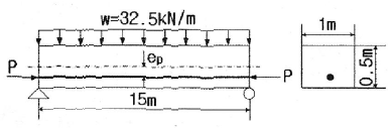
- 9MPa
- 13MPa
- 17MPa
- 23MPa
(정답률: 27%)
66. 직사각형 단철근 보에 배근된 주철근의 설계기준항복강도가 450MPa이고 이 철근에 0.0075의 변형률이 발생했을 때, 다음 설명 중 옳은 것은? (단, 철근의 탄성 계수는 200000MPa이다.)
- 이 부재는 압축지배단면이다.
- 이 부재의 강도감소계수는 0.65이다.
- 이 철근의 항복변형률은 0.00125이다.
- 이 부재의 인장지배 변형률 한계는 0.0⑤63이다.
(정답률: 15%)
67. 기둥에서 축방향 철근량의 최소한계를 두는 이유로 틀린 것은?
- 휨강도보다는 압축단면을 보강하기 위해서
- 시공 시 재료분리로 인한 부분적 결함을 보완하기 위해서
- 예상 외의 편심하중이 작용할 가능성에 대비하기 위해서
- 콘크리트 크리프 및 건조수축의 영향을 감소시키기 위해서
(정답률: 38%)
68. 콘크리트의 알칼리콜재반응에 의한 열화가 발생되는 직접적인 원인이 아닌 것은?
- 수분
- Na2O, K2O
- 반응성 골재
- 수산화칼슘
(정답률: 41%)
69. 그림과 같은 정사각형 독립확대기초 주변에 작용하는 지압력이 q=160kN/m2일 때 휨에 대한 위험단면의 모멘트는?
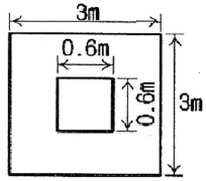
- 345.6kN·m
- 375.4kN·m
- 395.7kN·m
- 425.3kN·m
(정답률: 23%)
70. 콘크리트의 설계기준압축강도가 35MPa이고 단위질량이 2100kg/m3일 때, 콘크리트의 탄성계수(Ec)는?
- 23228MPa
- 24231MPa
- 25129MPa
- 26550MPa
(정답률: 34%)
71. 옹벽의 안정 조건 중 옳지 않은 것은?
- 지반의 허용지지력은 지반에 유발되는 최대 지반반력을 초과할 수 없다.
- 활동에 대한 저항력은 옹벽에 작용하는 수평력의 1.5배 이상이어야 한다.
- 전도에 대한 저항 휨모멘트는 횡토압에 의한 전도모멘트의 2.0배 이상이어야 한다.
- 전도 및 지반지지력에 대한 안정조건은 만족하지만, 활동에 대한 안정조건만을 만족하지 못할 경우에는 활동방지벽 혹은 횡방향 앵커 등을 설치하여 활동저항력을 증대시킬 수 있다.
(정답률: 27%)
72. 저압·저속식 주입공법에서 이용되지 않는 재료는?
- 에폭시 모르타르
- 플라스틱제 실린더
- 주입용 에폭시 수지
- 에폭시 실링제(Sealing)
(정답률: 36%)
73. 복철근 콘크리트 단면에 압축철근비 ρ‘=0.015가 배근된 경우 순간처짐이 30mm일 때, 1년이 지난 후의 전체 처짐량은? (단, 작용하중은 지속하중이며 시간 경과계수 ζ=1.4이다.)
- 24mm
- 30mm
- 42mm
- 54mm
(정답률: 33%)
74. 토목 구조물의 상태평가는 손상의 범위 및 정도에 따라 A, B, C, D, E의 5가지 등급을 산정한다. 이때 상태평가 등급에 대한 설명 중 틀린 것은?
- A : 문제점이 없는 최상의 상태
- B : 보조 부재에 경미한 결함이 발생하였으나 기능 발휘에는 지장이 없으며 경미한 보수가 필요한 상태
- C : 주요 부재에 경미한 결함이나 보조부재에 광범위한 결함이 있으나 전체적인 안전에는 지장이 없는 상태
- E : 주요 부재에 결함이 발생하여 긴급한 보수보강이 필요하며 사용제한 여부를 결정해야 하는 상태
(정답률: 39%)
75. 인장철근 D25(공칭지름 25.4mm)를 정착시키는데 필요한 기본 정착길이(lab)는? (단, λ=1, fck=26MPa, fy=400MPa이다.)
- 982mm
- 1196mm
- 1486mm
- 1875mm
(정답률: 47%)
76. 단면이 600mm×600mm인 사각형이고, 종방향철근의 전체단면적(Ast)이 4500mm2인 중심축하중을 받는 띠철근 단주의 설계축하중강도(øPn)는? (단, fck=24MPa, fy=400MPa이고, 압축 지배단면이다.)
- 4423kN
- 4707kN
- 5069kN
- 5386kN
(정답률: 32%)
77. 철근의 부식상태 조사방법 중 자연전위법에 대한 설명으로 틀린 것은?
- 자연전위(E)가 –350mV 이하이면 90% 이상의 확률로 부식이 있다.
- 콘크리트 표면이 건조한 경우에는 물을 뿌려 표면을 습윤상태로 만든 후 전위측정을 한다.
- 염화물의 침투와 중성화로 철근이 활성상태로 되어 부식이 진행하면 그 전위는 마이너스(-)방향으로 변화한다.
- 피복콘크리트의 전기저항을 측정함으로써 그 부식성 및 철근의 부식속도에 관계하는 정보를 얻을 수 있으며, 일반적으로 4점 전극법을 사용한다.
(정답률: 46%)
78. 화재에 의한 콘크리트 구조물의 열화현상에 대한 설명으로 틀린 것은?
- 콘크리트는 약 300℃에서 탄산화된다.
- 급격한 가열 시 피복콘크리트의 폭렬이 발생하기 쉽다.
- 콘크리트는 탈수나 단면 내의 열응력에 의해 균열이 생긴다.
- 콘크리트를 가열하면 정탄성계수의 감소에 의하여 바닥슬래브나 보의 처짐이 증대한다.
(정답률: 55%)
79. 처짐과 균열에 관한 설명으로 옳지 않은 것은?
- 미관이 중요한 구조는 미관상의 허용균열폭을 설정하여 균열을 검토할 수 있다.
- 균열 제어를 위한 철근은 필요로 하는 부재 단면의 주변에 분산시켜 배치하여야 하고, 이 경우 철근의 지름과 간격을 가능한 한 크게 하여야 한다.
- 처짐을 계산할 때 하중의 작용에 의한 순간처짐은 부재 강성에 대한 균열과 철근의 영향을 고려하여 탄성 처짐 공식을 사용하여 계산하여야 한다.
- 과도한 처짐에 의해 손상되기 쉬운 비구조 요소를 지지 또는 부착하지 않은 평지붕구조 형태의 최대 허용 처짐은 활하중에 의한 순간처짐을 고려하여야 한다.
(정답률: 39%)
80. 콘크리트 구조물의 보수 보강공법에 관한 설명 중 틀린 것은?
- 전기를 이용한 공법에는 탈염공법과 전착공법이 있다.
- 강판 접착 공법은 내하력을 향상시키기 위한 보강공법이다.
- 탄소 섬유는 강재보다 인장강도가 낮고, 무게도 강재보다 적다.
- 콘크리트 중성화로 강재 부식이 나타나 자개설이 불가능한 경우는 재알칼리화 공법을 사용한다.
(정답률: 33%)
1. 첫 번째 골재의 부피: 10 x 10 x 10 = 1000
2. 두 번째 골재의 부피: 20 x 20 x 20 = 8000
3. 세 번째 골재의 부피: 30 x 30 x 30 = 27000
4. 네 번째 골재의 부피: 40 x 40 x 40 = 64000
전체 부피 = 1000 + 8000 + 27000 + 64000 = 99800
따라서, 조립률은 (전체 부피 / 실제 부피) x 100 으로 계산할 수 있다. 여기서 실제 부피는 100 x 100 x 100 = 100000 이다.
조립률 = (99800 / 100000) x 100 = 99.8%
소수점 둘째 자리까지 반올림하면 7.34 가 된다.